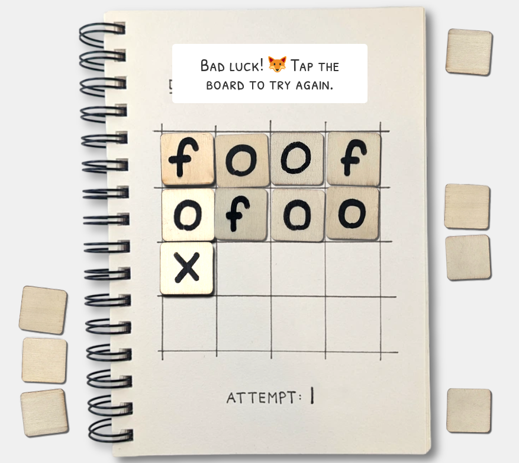

Update (2024-11-25)
There’s been a “game” going semi-viral recently called “Do Not Find the Fox”. It’s pretty simple: You randomly select and place letter tiles, in order, and if you place all of them without ever spelling “fox” in any direction, you win.

It’s not really a game, though. You have no agency outside of randomly choosing which of the face-down tiles to place, but since they’re randomly shuffled your choice does not matter. The creator of this “game” (Alex Cheddar) has made a video on the exact probability of winning no matter the strategy.
So if it’s not a game due to a lack of agency, what if we made it into a game by giving the player more agency? What if, instead of placing tiles in order from left to right, top to bottom, they placed them wherever they wanted! A player’s move would consist of first taking a face-down tile, then picking where to place it (without knowing what it is), then revealing what letter they just placed. This would surely have more depth to it, right? As it turns out, no. Even though we gave the player more choices, none of them matter, the chances of winning stay the same no matter what strategy they pick (so they can’t even intentionally lose). The rest of this post is a proof of that.
Notation: For brevity, we’ll call the original “Do Not Find the Fox” game “fox 1” and our new variant “fox 2”.
Definition: In both fox 1 and fox 2, we’ll say the player places all of their tiles before declaring a victory or loss. This does not change the game outcomes (which is why you normally don’t do that and just stop early), but it simplifies the math.
Definition: A strategy for fox 2 is a function that takes in the current board state (placed tiles and what letters they are) and returns a whole number between 1 and 16 indicating where to play a tile next. We’ll only be considering legal strategies (strategies whose output is always a legal move), and we’ll also imagine the player takes face-down tiles in order.
Note: Fox 1 is a variant of fox 2 where the player is forced to use the strategy f(n)=n+1, where n is the number of placed tiles in the board state so far.
Theorem: In fox 2, any two strategies have the same likelihood of resulting in any specific final board state.
Proof: We’ll first write a number on each of the tiles, 1 through 16, next to the tile’s letter. This number will be written in “invisible ink”, meaning we will not show it to the player and it will not affect their strategy. For any final board state (assignment of F,O,X to the board), there is a set of possible assignments of the hidden numbers 1 through 16 that would be consistent with said board state (“consistent” here meaning not contradicting the earlier assignment of numbers to tiles we did earlier). Call these the “hidden states”.
Lemma: Given any specific hidden state h and player strategy f, there is exactly one shuffling of the tiles that could have produced it.
Proof: The strategy f on the empty board picks a spot to place a tile. In the hidden state h that tile has a specific invisible number, so the shuffling must have that tile as its first tile. The player places it, and then the strategy f picks another spot to place a tile. In the hidden state that tile also has a specific invisible number, so the shuffling must have that tile as its second tile. The player places it, etc. etc. At no point in this process does the shuffling have any choice on what tile to produce next, so it is completely determined by the strategy and final hidden state.
For any two different hidden states h1 and h2 of the same state, the strategy f behaves identically on both hidden states and asks for the same placement order. Since the hidden states that result are different, the shufflings that produced them must also be different. Thus if a state has N hidden states, there are exactly N shufflings that produce it, regardless of the player strategy f. As the probability of a state occuring is proportional to the number of shufflings that produce it, this means the probability of the state occuring does not depend on f.
Theorem: In fox 2, any two strategies have the same likelihood of winning.
Proof: The likelihood of winning is the likelihood of getting any of the winning states, which is the sum of likelihoods of getting each of those states individually. As the strategy chosen does not affect any of those probabilities, it doesn’t affect the sum, either.